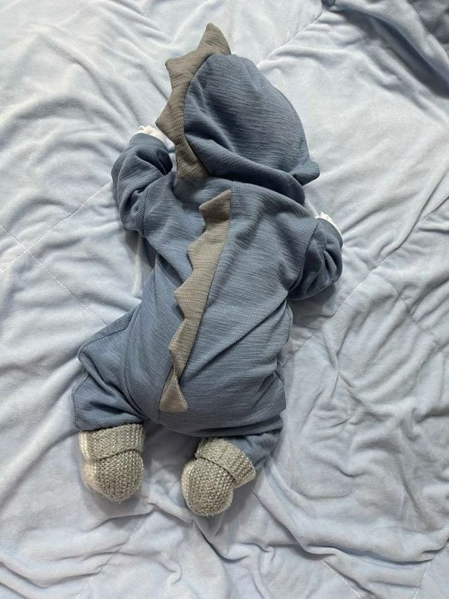

Alimentação (Amamentação em livre demanda)
Os bebês nesta fase mamam com frequência. O intervalo entre o início de uma mamada e a seguinte costuma variar de 2h30 a 4 horas (contando a partir do começo da mamada)
A paternidade não vem com manual, mas você não precisa descobrir tudo sozinho.
Mudar drasticamente a dinâmica da casa e adotar uma nova realidade é o principal desafio dos pais de primeira viagem.
A rotina com o bebê é um processo diário de adaptação, aprendizado e paciência, em que os horários previsíveis trazem segurança para a criança e resgatam o equilíbrio emocional da família.
Pequenos passos podem fazer uma grande diferença.
Os bebês nesta fase mamam com frequência. O intervalo entre o início de uma mamada e a seguinte costuma variar de 2h30 a 4 horas (contando a partir do começo da mamada)
Após mamar, faça o bebê arrotar para evitar cólicas e refluxo, e aproveite para verificar e trocar a fralda.
Um recém-nascido aguenta ficar acordado por pouquíssimo tempo — geralmente entre 45 minutos e 1 hora (incluindo o tempo de mamar e trocar). Se passar disso, ele fica superestimulado e chora por excesso de cansaço.
Pode ser dado em qualquer horário que funcione para a família (muitos preferem no final da tarde para acalmar, mas vale o que for mais prático). A água deve estar em torno de 36°C.

Conheça os principais cuidados para começar sua jornada com mais segurança.
Aprenda os cuidados com a higiene e as fraldas.
Conheça os cuidados para o bebê dormir com segurança.
Conheça as orientações sobre a alimentação infantil.
Aprenda a identificar sinais de fome, sono e desconforto.
Ser pai é uma jornada de aprendizado. Com informação, carinho e dedicação, você pode crescer junto com seu bebê e construir uma conexão especial.